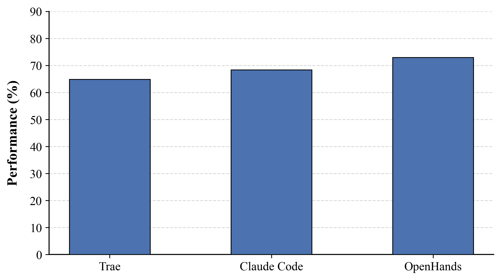
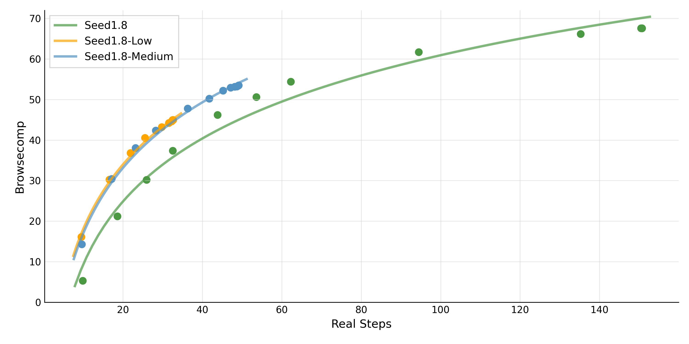
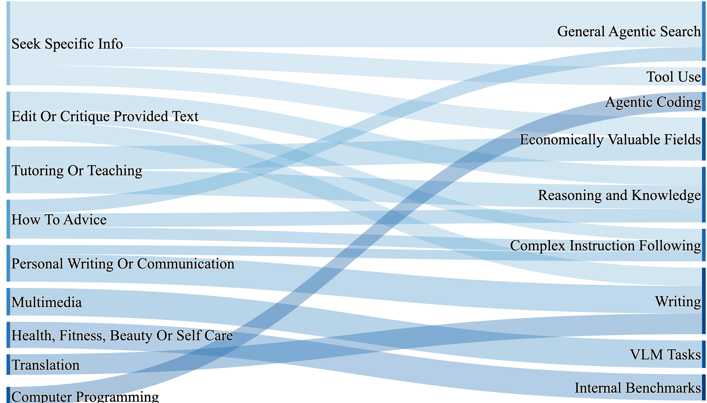
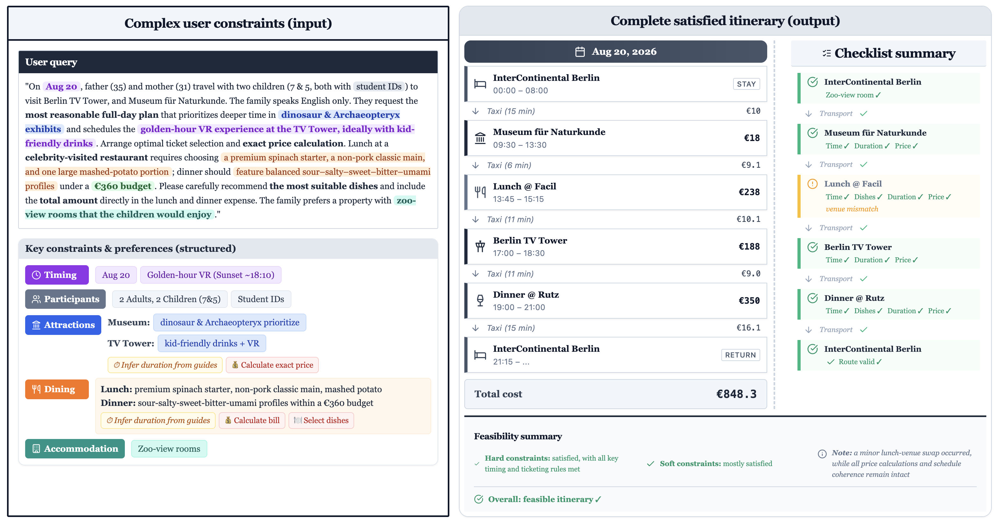

Design Philosophy: Generalized Real-World Agency
Seed1.8 targets generalized real-world agency — going beyond single-turn prediction to support multi-turn interaction, tool use, and multi-step task execution within a single unified model.
1. Strong Base Capabilities: Competitive on reasoning, code, knowledge, multimodal understanding
2. Unified Agentic Interface: Search + Code + GUI in one model
3. Latency/Cost-Aware Inference: 4 configurable thinking modes
4. Practical Evaluation: Public benchmarks + internal business domains

Identify optimal intervention timing without explicit triggers, enabling more natural human-machine interaction.
Core Agentic Capabilities
OSWorld: SOTA | Realbench: SOTA
Online-Mind2Web: SOTA (85.9%) | AndroidWorld: SOTA (70.7%)
GAIA: 93.2 (vs GPT-5-high: 76.7!)
BrowseComp-en: 67.6 | BrowseComp-zh: 78.5
WorldTravel: Best (multimodal)
XpertBench Finance: 62.0 | XpertBench Law: 55.2

ScreenSpot-Pro: 64.3 (vs Seed1.5-VL: 60.9)
With crop-box tool: 73.1 (new SOTA)

Experimental Results
Evaluated across GUI Agent, Agentic Search, and Foundation capabilities. Seed1.8 achieves SOTA on multiple tasks, surpassing GPT-5-high.
| Benchmark | Seed1.8 | Best Competitor |
|---|---|---|
| GUI Agent | ||
| OSWorld | SOTA | — |
| Online-Mind2Web | 85.9% | — |
| AndroidWorld | 70.7% | — |
| Agentic Search | ||
| GAIA | 93.2 | GPT-5-high: 76.7 |
| BrowseComp-zh | 78.5 | — |
| Multimodal Reasoning | ||
| ZeroBench (main) | 11.0 SOTA | Gemini 3 Pro: 10.0 |
| MathVision | 2nd | Gemini 3 Pro |
Seed1.8 achieves 93.2 on GAIA, far exceeding GPT-5-high's 76.7 (+16.5). Domestic models have established significant advantage in agentic search.

Seed1.8's approach: strong base capabilities + unified agentic interface + configurable thinking modes + application-aligned evaluation is a complete product roadmap.